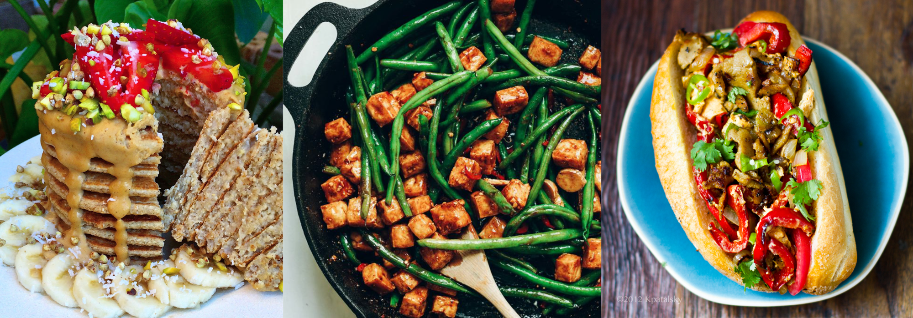

One easy way to combat factory farming is to stop purchasing and consuming animal products.
Adopting a vegan lifestyle may seem challenging, but it is actually very easy to do in today's world. With the aid of the Internet, you can find hundreds of delicious vegan recipes, as well as various information on the vegan lifestyle. If you are hesitant to become vegan, start off by becoming vegetarian. Giving up meat is a healthy first step. Once you feel adjusted, you can then transition yourself into giving up dairy, eggs, and other animal products.
Here are some helpful links to help you learn about and adopt a vegan lifestyle:
If you are still adamant on eating meat, you can still begin to help end factory farming. As a consumer, you can make food choices that help put a dent in the high demand for animal products. You can do this by:
Here are some links to help you make more conscious shopping decisions: